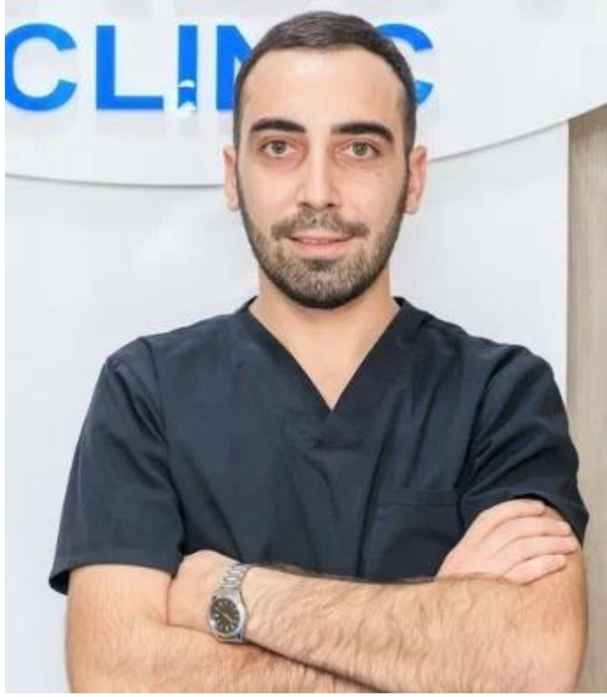

Բժշկական գիտությունների նվիրված մասնագետ՝ շտապ օգնության, դիմածնոտային վիրաբուժության և կլինիկական պրակտիկայի բազմամյա փորձով։
Ծնվել եմ 05.05.1998թ. Գեղարքունիքի մարզի Սարուխան գյուղում։ 2022թ.-ին ավարտել եմ Երևանի Մ. Հերացու անվան պետական բժշկական համալսարանի «Ստոմատոլոգիա» ֆակուլտետը, իսկ 2025թ.-ին՝ կլինիկական օրդինատուրայի «Դիմածնոտային վիրաբուժություն» բաժինը։ Ունեմ շտապ օգնության ղեկավարման, COVID-19 տրիաժի և կլինիկական վիրաբուժության փորձ։
Անձնական որակներ. Խմբում աշխատելու կարողություն, պատասխանատվության զգացում, վերլուծական մտածողություն, արագ կողմնորոշվելու ունակություն, ժամանակի արդյունավետ կառավարում, համբերատարություն և հաղորդակցման բարձր հմտություններ։